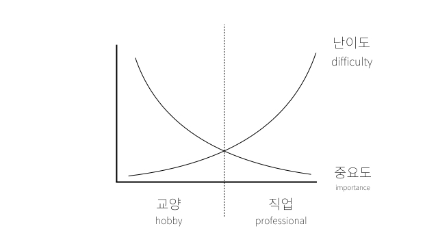

그동안 참 많은 것을 경험했다. 그럼에도 어떤 일을 할 때, 나와 관련된 다른 직군의 일을 이해하고 싶었다. 마케팅을 하면서 이번엔 개발을 이해해보고 싶었다. 마침 '생활코딩'이라는 곳을 알고 있어서 한 번 들어봐야지 하는 마음으로 공부를 시작했다.
그런데 신기한 것은, 개발자를 위한 이 강의는 누가 들어도 유용한 것이었다. 무작정 이상적으로 보이는 개발의 길로 들어오라는 식상한 말은 절대 하지 않는다.이 강의를 듣는 모든 사람들은 (개발직군이던 아니던) 자신의 현재 상황을 이해하고, 자신의 욕구를 파악해 더 나은 길로 나아가게 해 준다. 그것이 꼭 개발의 길이 아니어도 말이다. WEBn의 첫 강의, html과 internet 이야기는 가히 예술적이었다.
나에게 공부는 꾸준히 해야 하는 것, 계속해서 쌓아나가야 하는 그 무엇이었다. 그런데 이 강의 마무리에서 강사는 이렇게 말한다. 지금까지 배운 것을 써먹어 볼 때이니까, 이제 그만 돌아가라고. 처음엔 좀 황당했다. 왜?라고 생각하는 나를 두고 강사는 이렇게 이어갔다. 공부를 그만두라는 것이 아니라고. 다만 지금 배워 본 것을 일단 써보고, 거기서 내가 얻고자 하는 것이 무엇인지 파악하고, 더 나은 무언가를 만들고 싶은 욕망이 쌓이고 쌓였는데 해결이 안 된 그 순간에 다시 강의를 들으러 오라고.
무작정 이 직업이 유망하니까 해볼까?라는 마음으로 직업을 고르는 사람들이 많다. 그런 것을 피하고 싶어서 보통 사람들은 기초 강의를 듣고, 중급 강의를 듣고, 고급 강의를 듣는다. 계속 듣는다. 그리고 그 무지막지하게 쌓인 지식을 다 알고 나서 써먹고 싶을 때에는 이미 머리가 가득 차서 실무에 잘 써먹지도 못한다.
이제 저 그림 이야기를 해보자. 보통 우리는 한 분야의 본질부터 배운다. 내가 통번역으로 직업을 선택하기 전 기초 프랑스어에서 기본 회화와 문법을 배운 그런 것들 말이다. 아주 많은 곳에 수없이 쓰이는 지식. 조금만 배워도 아주 여러 곳에 써먹을 수 있는 지식이다. 누구나 접할 수 있고, 배우기 시작하면 속도가 치타처럼 빨라서 배우는 재미가 많은 구간이다. 내가 딱 이 과정을 프랑스어를 시작하면서 느꼈다. 늘면 늘수록 할 수 있는 게 많고 재밌었다. 그런데 이 구간은 교양에 속하는 영역이다.
그러다 어떤 임계점부터 공부가 어려워진다. 이 부분은 알아도 몰라도 그만인 영역. 새로운 것을 알게 되어도 그걸 다른 사람도 나도 뭔가 크게 잘하게 되었다고 생각하지는 않는다. 여기서의 새로운 것들은 아주 사소하고 지엽적이기 때문에 치타처럼 빨리 배울 수 있는 정도의 난이도가 아니다. 지금 여기서만 쓸 수 있는 지식일 수도 있다.그래서 느리고 답답하다고 느낀다. 그래서 이 구간은 혁신이고, 직업이다.
여기서 중요한 것.
내가 새로운 것을 하고자 할 때. 나는 본질로써 이 일을 좋아하는 것일까 아니면 혁신을 하고 싶은 것일까? 이것을 판단해야 한다.
자세한 내용이 궁금하면 생활코딩 참조
마케팅을 시작한 지 사실은 1년이 채 되지 않앗다. 처음에는 광고를 실무로만 공부했고, 지금은 데이터를 실무로만 공부했다. 그래서 사실 내가 그래프의 어느 위치에 있는지 모른다. 약간 저 중간 임계점에 있는 듯 한데... 최근에는 교양으로써의 마케팅 교육이 부족한 상황. 즉 본질이 부족하다고 느낀다.
여기서 어려움에 봉착한다. 도대체 마케팅의 본질이 무엇이냐구요... 어떤 기본기를 쌓아야 하는 건가요? 그게 언어라면 무엇인지 정확하게 알겠는데!